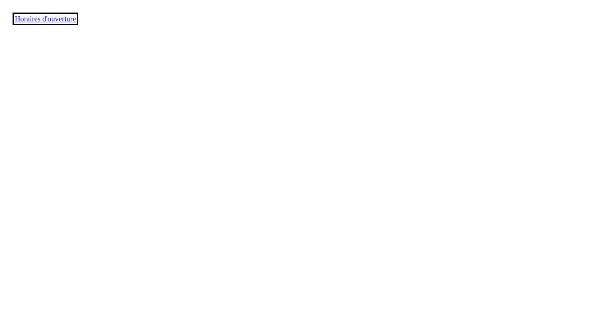

10.7.1
Indicateur de focus noir de 3 px
Revu Conforme Geste
- Test
- 10.7.1
- Modalités
- html, capture, interaction
- Relecture
- 22 octobre 2026
Motif
Le lien a le focus au chargement. L'indicateur est un contour noir de 3 px, décalé de 2 px, sur fond blanc. Le rapport du noir sur le blanc est 21:1, au-dessus de 3:1. La capture montre cet état. Le test 10.7.1 demande un indicateur visuel de prise de focus, sur le contour ou le fond, suffisamment contrasté. Relecture sur la page du test le 22 octobre 2026.
Pièces visuelles

Cibles
aLien focalisé au chargement
Environnement
- Navigateur
- Chromium 154.0.8037.97 Arch Linux
- Viewport
- 1280×720
- Zoom
- 100 %
Autres cas de ce test
Page minimale
Spécimen. La page jugée n’est pas modifiée.